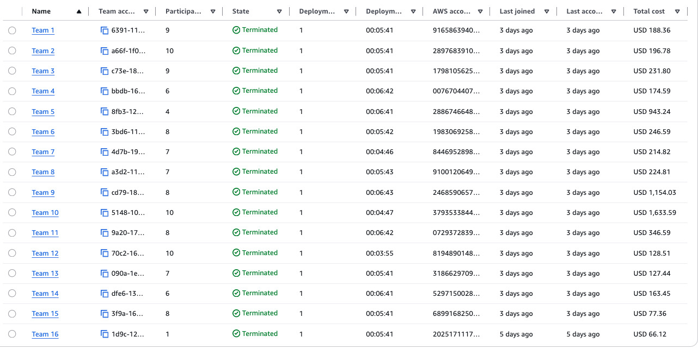

week: 6 title: "W6: Operations Hardening & Cost-Aware Cloud" audience: students release: "Sáng Thứ Hai 18-05-2026" deadline: "Thứ Sáu 22-05-2026, presentation nhóm"
W6: Operations Hardening & Cost-Aware Cloud
18–22 tháng 5, 2026
Thử thách tuần này
Năm tuần trước bạn đã đề xuất một kiến trúc 3-tier (W1). Bạn đặt nền storage và identity — S3, IAM, EBS (W2). Bạn thêm một database backbone và lớp AI knowledge — RDS hoặc DynamoDB, Bedrock Knowledge Base, Lambda (W3). Bạn dạy hệ thống tự suy luận và tự hành động — multi-level retrieval, agent tools, memory (W4). Bạn hardening network — topology multi-VPC, ép buộc firewall, API Gateway đứng trước Lambda, scaling pattern, backup có restore test (W5). Mỗi tuần thêm một lớp năng lực mới vào CÙNG một ứng dụng.
W6 không thêm lớp năng lực thứ sáu. W6 lấy chính ứng dụng mà team deploy lại vào Thứ Hai — cùng kiến trúc, cùng business domain, cùng các quyết định thiết kế đã mang theo từ W1 đến W5 — và hỏi: bạn có VẬN HÀNH được nó không? Bạn không bị chấm lại các tuần đó. Lấy thứ bạn đã xây — kiến trúc, business domain, code — và áp lăng kính vận hành W6 lên nó.
Hệ thống thật hỏng theo những cách rất dễ đoán mà chẳng liên quan gì đến network. Một alarm kêu lên nhưng kẹt ở trạng thái INSUFFICIENT_DATA vì ứng dụng chưa từng tạo ra nổi một data point nào trước Thứ Sáu. Tag tồn tại trên ba resource nhưng không có trên mười cái khác, nên Cost Explorer cho thấy tổng account nhưng không quy được một đô la nào về workload của bạn. Trusted Advisor cảnh báo hai EC2 instance idle còn sót lại từ một thử nghiệm redeploy hôm Thứ Hai — và team document chúng là "thú vị" nhưng không terminate gì, không đổi gì, vẫn cứ tốn tiền. Một gp2 EBS volume đang chạy cạn burst-credit và không ai migrate nó sang gp3 vì không ai nhìn vào IOPS baseline. Một security alarm tồn tại nhưng chưa ai từng trigger vi phạm để xác nhận auto-remediation thực sự fix được nó.
Mỗi thứ trong đó là một khe hở giữa "đã deploy" và "production-ready". Không cái nào hiện ra trong một sơ đồ network. Chúng hiện ra lúc 2 giờ sáng khi có thứ gì đó hỏng — hoặc cuối tháng khi hoá đơn về.
W6 đóng các khe hở này — trên chính ứng dụng team deploy lại vào Thứ Hai bằng cùng thiết kế nhóm bạn đã tiến hoá từ W1. Bốn lớp vận hành phải hiện diện chứng minh được vào Thứ Sáu. Không phải document. Demonstrable. Bạn sẽ dẫn trainer đi qua từng cái live.
Nguyên tắc của tuần này: demonstrable, not documented. Một tag chưa phải là cost allocation cho tới khi nó được activate trong Billing console. Một cost guard chưa phải control cho tới khi automation đã thực sự stop một resource. Một CloudWatch alarm chưa phải alarm cho tới khi nó có data để evaluate. Một security guard chưa phải self-healing cho tới khi bạn đã trigger một vi phạm và thấy nó tự auto-remediate. Build, verify, và show.
Cái gì mang theo — Architecture, Concept, Code
Workshop account reset mỗi tuần. Cái mang theo là architecture diagram, business domain, các quyết định thiết kế, và code repository của bạn. Dùng W5 Evidence Pack làm tham chiếu khởi đầu — mở nó ra sáng Thứ Hai khi bạn ngồi xuống với account tươi.
Redeploy bất kỳ phần nào của ứng dụng bạn cần để demo bốn must-have W6. Bạn không cần chứng minh lại mọi feature từ W1-W5 — phần đó đã được đánh giá trong các tuần ấy. Chấm W6 tập trung vào 4 MH của W6 — Cost Visibility & Attribution, Cost Control & Action, Monitoring, Self-Healing Security Guard — áp lên bất cứ thứ gì bạn redeploy tuần này.
Kỳ vọng Friday Part 1 (nhẹ) — chỉ recap dự án:
- Một recap ngắn bằng lời/slide về dự án: ứng dụng là gì, business domain của nó, và các quyết định kiến trúc và thiết kế chính mang theo từ W1-W5 — đủ để khung lại phần việc vận hành W6
- Nhắc ngắn gọn bất kỳ feedback W5 nào bạn đã giải quyết (tuỳ chọn, không chấm — nhưng nếu bạn dẫn một thứ cụ thể, nó có thể hỗ trợ Criterion I)
Vậy thôi. Part 1 thuần tuý là một recap đặt context. Không cần action live trên app trong Part 1, không cần cập nhật architecture diagram trong Part 1, không có danh sách verification theo từng tuần, và không có audit toàn bộ stack W1-W5 vào sáng Thứ Sáu. (Bạn vẫn sẽ đi qua W6 architecture và chạy live MH evidence trong Part 2 và 4.)
Hard Rule — $150 Cost Cap (đọc trước mọi thứ khác)
Mỗi nhóm có một trần chi phí cứng là USD 150 cho tuần này. Nếu tổng account của nhóm bạn vượt $150, toàn bộ bài tập W6 của nhóm đó fail. Không có ngoại lệ kiểu "nhưng tụi em xây nhiều lắm".
Tuần trước một nhóm để resource chạy idle và đốt hơn một nghìn đô la trên một account chỉ dùng cho workshop. Tuần này chuyện đó dừng lại. Một stack workshop 3-tier hoàn chỉnh không bao giờ cần đến gần $150 — trần này đã rất rộng rãi. Vượt nó nghĩa là một resource đắt tiền bị để chạy 24/7 không dùng, chứ không phải nhóm đã xây nhiều hơn.

Cách chọn resource để giữ dưới $150 (Single-AZ, instance nhỏ nhất mà chạy được, serverless nơi nào có thể, tắt mọi thứ không cần qua đêm, không Bedrock Provisioned Throughput / OpenSearch multi-node / EKS) nằm trong companion memo bắt buộc, chia sẻ kèm theo thông báo này. Giữ chi phí ≤ $150 và chứng minh bạn đã chủ động kiểm soát chi tiêu chính là MH-COST-V + MH-COST-A — đây không phải việc làm thêm.
Phải nộp gì (Bốn Core Must-Haves)
Cả bốn must-have phải demonstrable vào Thứ Sáu. Hai trong số đó là cost must-have: MH-COST-V (cost visibility & attribution) và MH-COST-A (cost control & action). Hai cái còn lại là MH-OBS (monitoring) và MH-SEC (Self-Healing Security Guard). Chúng map vào những gì bạn học tuần này: cost visibility Thứ Hai, CloudWatch + cost tools Thứ Ba, security automation Thứ Tư. Vừa học vừa xây — screenshot Evidence Pack chụp hôm Thứ Ba luôn đáng tin hơn cái dựng lại vào tối Thứ Năm.
Cost gate: Ngoài bốn must-have dưới đây, tổng account ≤ $150 là điều kiện tiên quyết — vượt trần thì bài tập W6 fail kể cả khi cả bốn MH đều làm tốt (xem Hard Rule ở trên).
1. MH-COST-V — Cost Visibility & Attribution
Must-have "tôi biết tôi đang tiêu gì và tiêu vào cái gì". Trước khi bất kỳ cost tool nào có ý nghĩa, tag mới là cái có ý nghĩa.
Cả bốn component đều bắt buộc:
Component 1 — Tagging discipline. Áp tag nhất quán lên mọi billable resource team redeploy: EC2 instances, RDS instances, Lambda functions, S3 buckets, EFS file systems, API Gateways. Tối thiểu bốn key:
| Tag key | Giá trị ví dụ | Quy tắc |
|---|---|---|
Owner |
teamlead@email.com |
Một người chịu trách nhiệm — viết hoa nhất quán. Không có chuyện Owner lẫn owner. |
Environment |
dev |
Không bao giờ trộn giá trị — "dev" và "Dev" là khác nhau trong Cost Explorer |
CostCenter |
G7 |
Group ID của bạn |
Application |
HealthBot |
Nhất quán — "HealthBot" và "healthbot" là hai giá trị tag khác nhau |
Viết một tài liệu tagging strategy 1 trang: bạn dùng key nào, giá trị nào được phép, và bạn sẽ enforce compliance thế nào trong một account thật.
Component 2 — Cost allocation tags activated. Vào AWS Billing console → Cost allocation tags → tìm key Owner và Application của bạn → Activate. Đây là bước riêng tách khỏi việc tạo tag. Bỏ qua nó thì tag của bạn sẽ không xuất hiện như filter dimension trong Cost Explorer — quy trình hai bước, cả hai bước đều bắt buộc.
Component 3 — Ít nhất một cost monitoring tool được cấu hình. Chọn từ:
| Tool | Nó cho bạn biết gì |
|---|---|
| Cost Explorer | Xu hướng theo service, tag, và khoảng thời gian — filter về workload của bạn, xác định top cost driver |
| AWS Budgets | Cảnh báo chủ động trước khi vượt ngưỡng — set trước Thứ Sáu, không phải sau |
| Cost Anomaly Detection | ML phát hiện chi tiêu bất thường — kêu lên khi có thứ gì đó tăng vọt ngoài dự kiến |
Nhóm mạnh cấu hình từ hai tool trở lên.
Component 4 — Baseline cost breakdown. Chụp screenshot cho thấy chi phí theo tag dimension của bạn sau ít nhất 24 giờ data redeploy. Viết một đoạn quan sát 1 paragraph: nêu tên top 3 cost driver và chỉ ra bất cứ gì trông đáng ngạc nhiên hoặc cao hơn dự kiến.
Pass condition: Cả bốn tag key trên mọi billable resource. Cost allocation tags được activate. Ít nhất một tool được cấu hình và demonstrable. Baseline cost screenshot kèm quan sát viết tay. Tài liệu tagging strategy trong Evidence Pack. Tổng account ≤ $150 — vượt trần làm fail toàn bộ bài tập W6 (xem Hard Rule ở đầu tài liệu này).
Pitfall cần tránh: Tag resource mà không activate cost allocation tags trong Billing console. Tag tồn tại trên resource nhưng không xuất hiện như filter dimension trong Cost Explorer cho tới khi bạn activate. Screenshot cả hai: tag trên resource VÀ tag đã activate trong Billing console.
2. MH-COST-A — Cost Control & Action
Must-have "tôi đã xây automation HÀNH ĐỘNG trên cost, không chỉ quan sát nó". Đây là cái tách W6 khỏi cost theater chung chung. Deliverable duy nhất là Automated Cost Guard — một cơ chế tự động phát hiện một điều kiện cost/usage và hành động bằng cách tắt resource, không chỉ thông báo.
Cả bốn component đều bắt buộc:
Component (a) — Stop Lambda. Một Lambda function mà khi được invoke sẽ stop (hoặc terminate) billable compute không nên tiếp tục chạy — ví dụ: EC2/RDS instance KHÔNG được tag keep=true (hoặc mọi compute Environment=dev). IAM role least-privilege.
Component (b) — Daily scheduled trigger. Một EventBridge Scheduler / EventBridge rule trên một daily cron invoke cái Lambda. (Cho demo bạn có thể set một interval ngắn hoặc invoke thủ công — xem ghi chú 48h dưới đây.)
Component (c) — Demonstrated action. Ít nhất một EC2 hoặc RDS instance thật chuyển running → stopped vì cái Lambda đã chạy, kèm CloudTrail (StopInstances / StopDBInstance) evidence — screenshot before/after.
Component (d) — Cost-driven path (wire it, demo the chain). Cũng wire một AWS Budgets DAILY budget ở $150 → SNS → cùng cái Lambda (hoặc một Budgets Action stop EC2/RDS). Vì AWS cost data trễ ~8–24h, cost-driven trigger thật gần như sẽ KHÔNG fire trong một account 48h — đó là điều dự kiến và không bị penalize. Full credit = wiring tồn tại + bạn demo cái chain bằng cách publish một test message tới SNS topic (hoặc thủ công trigger Budgets Action) để cái Lambda stop một resource, CỘNG một ADR ngắn ghi nhận cost-data latency và production behavior. Một scheduled mechanism thiếu, không có demonstrated stop, hoặc một ADR thiếu SẼ BỊ penalize.
Pass condition: Lambda được deploy (least-privilege role) + daily EventBridge schedule được cấu hình + ≥1 resource demonstrably bị stop bởi cái Lambda kèm CloudTrail before/after evidence + Budgets $150→SNS/Action→Lambda được wire kèm latency ADR.
Pitfall cần tránh: Một budget chỉ gửi email. MH-COST-A chấm trên một resource thực sự bị tắt bởi automation, không bao giờ là một notification. Một cost-driven Budgets trigger chưa fire trong một account 48h là điều dự kiến; một scheduled mechanism thiếu, không có demonstrated stop, hoặc một latency ADR thiếu thì không.
3. MH-OBS — Monitoring: Know Before the User Does
Một ứng dụng đã deploy mà bạn không quan sát được là một ứng dụng bạn đang quản lý bằng hy vọng. Ba component bắt buộc — cả ba, không phải lựa chọn thay thế.
Áp cái này lên ứng dụng đã redeploy của bạn — MH-OBS theo dõi:
- Lớp AI inference của bạn sau khi redeploy (custom metric: agent latency, token count, retrieval accuracy)
- Lớp database của bạn sau khi redeploy (alarm trên RDS connections, DynamoDB consumed capacity)
- API Gateway của bạn sau khi redeploy (Log Insights query trên pattern 4xx/5xx, throttle count, top slowest endpoint)
- Lambda function của bạn sau khi redeploy (error rate, cold start duration)
Component A — CloudWatch dashboard với một custom metric. AWS đã cho bạn default metric miễn phí: EC2 CPU, ALB request count, Lambda duration và errors. Yêu cầu là một custom metric — thứ gì đó ứng dụng của bạn đo và publish tường minh bằng PutMetricData API. Nghĩ về cái ứng dụng của bạn làm ở tầng business logic. Operation nào quan trọng nhất với user của bạn? Đó là cái bạn instrument.
import boto3
cloudwatch = boto3.client('cloudwatch')
cloudwatch.put_metric_data(
Namespace='AppName/Operations',
MetricData=[{
'MetricName': 'InferenceLatencyMs',
'Value': latency_ms,
'Unit': 'Milliseconds'
}]
)
Thay InferenceLatencyMs bằng cái ứng dụng của bạn thực sự làm: Bedrock call latency, RDS query duration, pipeline job completion count, failed authentication attempts, items processed per minute. Widget dashboard cho metric này đặt cạnh ít nhất hai standard infrastructure metric.
Component B — Ít nhất một CloudWatch alarm ở trạng thái OK hoặc ALARM. Alarm phải ở trạng thái OK hoặc ALARM vào Thứ Sáu — không phải INSUFFICIENT_DATA. INSUFFICIENT_DATA nghĩa là metric chưa từng nhận một data point nào. Trigger ứng dụng của bạn hôm Thứ Năm để tạo data trước khi Thứ Sáu đến. Một Lambda Errors alarm set 5 errors trong 5 phút là baseline hợp lý — invoke Lambda với bad input 6 lần để trigger nó, capture state transition, và show nó trong demo của bạn.
Component C — Log Insights query được save chống lại một log group thật. Query phải chạy chống lại một log group thật trong account của bạn (Lambda logs, VPC Flow Logs, CloudTrail — cái nào ứng dụng của bạn tạo ra). Save nó dưới Logs Insights > Saved Queries. Query phải làm nhiều hơn filter @timestamp > ago(1h) — dùng stats, sort, parse, hoặc regex để trích ra thứ gì đó có ý nghĩa.
Ba query pattern để tham chiếu:
# Lambda error spikes by 5-minute window
fields @timestamp, @message
| filter @message like /ERROR/
| stats count(*) as error_count by bin(5m)
| sort @timestamp desc
# Top rejected IPs from VPC Flow Logs
filter action="REJECT"
| stats count(*) by srcAddr
| sort count desc | limit 10
# IAM AccessDenied events by principal
filter errorCode="AccessDenied"
| stats count(*) by userIdentity.arn
| sort count desc
Pass condition: Dashboard với custom metric widget + hai standard metric widget. Ít nhất một alarm ở trạng thái OK hoặc ALARM với một action được cấu hình. Ít nhất một Log Insights query được save chống lại một log group thật với kết quả nhìn thấy được.
Pitfall cần tránh: Alarm ở trạng thái INSUFFICIENT_DATA vào Thứ Sáu. Trigger ứng dụng của bạn chiều Thứ Năm để metric có data point trước demo.
4. MH-SEC — Self-Healing Security Guard: Chứng minh hạ tầng của bạn tự fix vi phạm của chính nó
IAM policy và Security Group là lãnh địa W2 và W5. W6 đi sâu thêm một lớp: một vòng lặp detect→auto-fix bắt được một security misconfiguration trên stack đã redeploy của bạn và tự động remediate nó. Cái này cố tình tái sử dụng đúng pattern EventBridge→Lambda mà bạn đã xây cho MH-COST-A Cost Guard.
AWS Config configuration recorder, managed Config rule, SSM Automation runbook, và một AutomationAssumeRole KHÔNG BẮT BUỘC cho MH-SEC — chúng là các mảnh dễ gãy và thường không bật được trong account sandbox 48h. AWS Config chỉ có thể được nhắc đến như một detection source thay thế TUỲ CHỌN — không bao giờ bắt buộc. Không cần Config compliance dashboard.
Bắt buộc với mọi nhóm — vòng lặp detect→auto-fix:
- Một Lambda phát hiện MỘT security misconfiguration trên stack đã redeploy và tự fix nó qua boto3. Chọn một (hai cái sạch nhất, khuyến nghị):
- Security Group ingress mở ra
0.0.0.0/0trên port 22/3389 →RevokeSecurityGroupIngress; HOẶC - S3 bucket bị set public →
PutPublicAccessBlock(bật Block Public Access trên bucket). - (Một detector cho EBS/RDS chưa mã hoá là chấp nhận được, nhưng fix cho SG / S3-public là remediation deterministic sạch nhất.)
- Security Group ingress mở ra
- Một trigger với một IAM role least-privilege: hoặc một EventBridge rule trên CloudTrail/API event (
AuthorizeSecurityGroupIngress,PutBucketPolicy/PutBucketAcl) để remediate gần real-time, HOẶC một EventBridge Scheduler daily cron (cùng cơ chế đáng tin như Cost Guard) làm fallback. - Một vòng lặp được demo: cố ý tạo vi phạm → Lambda detect + fix nó → evidence = một screenshot before (insecure) + một screenshot after (remediated) + CloudTrail event của lần gọi fix API (
RevokeSecurityGroupIngress/PutPublicAccessBlock).
Cộng MỘT supporting preventive control (chọn một):
Path A — KMS Customer Managed Key trên một data store
| Bước | Làm gì |
|---|---|
| Create CMK | KMS console → Customer managed keys → Create (Symmetric, Encrypt and decrypt). Set alias: alias/appname-rds-prod hoặc tương đương. |
| Enable rotation | Key configuration → Automatic key rotation → Enabled |
| Apply lên data store của bạn | Modify một RDS / S3 / EBS / EFS / DynamoDB đã redeploy để dùng CMK (không phải aws/s3 hoặc aws/rds — những cái đó là AWS-managed, bạn không kiểm soát chúng) |
| Verify qua CloudTrail | CloudTrail → Event history → filter kms:GenerateDataKey hoặc kms:Decrypt — event từ rds.amazonaws.com hoặc s3.amazonaws.com xác nhận CMK đang được dùng active |
Path B — S3 Block Public Access account-level + deny policy
| Bước | Làm gì |
|---|---|
| Account BPA | S3 console → Block Public Access settings for this account → bật cả bốn setting |
| Deny policy | Thêm một bucket policy deny PutObject chưa mã hoá (s3:x-amz-server-side-encryption thiếu) HOẶC PutObject non-TLS (aws:SecureTransport=false) |
| Prove it | Show policy + một test call bị deny (một attempt bị policy reject) |
Path C — IAM Access Analyzer
| Bước | Làm gì |
|---|---|
| Enable | Enable IAM Access Analyzer trong account của bạn |
| Triage | Surface ≥1 external-access finding và triage nó: nó là gì, có phải intended không, production remediation |
Security-cost trade-off (bắt buộc — mọi path): Evidence Pack của bạn phải bao gồm 1-2 câu giải thích control đã chọn tốn gì và vì sao cost đó được justify. "Nó an toàn hơn" không phải câu trả lời chấp nhận được — nêu tên cost và justification.
Pass condition: Lambda + trigger được deploy (least-privilege); một vòng lặp detect→fix được demo kèm before/after screenshot + CloudTrail của lần gọi remediation API; một supporting preventive control kèm evidence; câu statement security-cost. Không cần Config recorder / managed Config rule / SSM Automation / AutomationAssumeRole.
Pitfall cần tránh: Một security control chỉ detect, log, hoặc alert mà không fix. MH-SEC chấm trên automated remediation được demo (CloudTrail event của lần gọi fix API), không phải một finding hay một alarm.
Worked Examples: Áp W6 lên stack hiện có của bạn
Ba loại ứng dụng — tìm cái gần nhất với của bạn và dùng nó làm mỏ neo.
HealthBot (medical Q&A với RAG)
W3 design: RDS PostgreSQL. W4: Bedrock KB, Lambda agent tools. W5: API Gateway + L2 multi-source retrieval. W6: ứng dụng được redeploy (bất kỳ phần nào cần cho demo W6).
MH-COST-V: Tag mọi resource đã redeploy: Application=HealthBot, Owner=<lead>, Environment=dev, CostCenter=G<N>. Activate tag trong Billing console. Cost Explorer filter về Application=HealthBot sau 24h cho thấy: EC2 $2.40, RDS $1.80, Lambda $0.02, Data Transfer $0.40. Quan sát: "RDS đang chạy Multi-AZ trong một dev account — tắt Multi-AZ ở dev sẽ cắt dòng RDS đi ~50%."
MH-COST-A: Stop Lambda lặp qua EC2/RDS không được tag keep=true và stop chúng; least-privilege role giới hạn ở ec2:StopInstances / rds:StopDBInstance. Daily EventBridge Scheduler cron lúc 20:00. Demo: một EC2 instance còn sót lại từ redeploy chuyển running → stopped vì cái Lambda đã chạy, CloudTrail show StopInstances. Budgets daily $150 → SNS → cùng cái Lambda được wire; test SNS publish drive một stop; latency ADR ghi nhận cost data trễ ~8–24h nên cost-driven path sẽ không fire trong một account 48h.
MH-OBS: Custom metric bedrock_query_latency_ms publish từ retrieval Lambda đã redeploy. Alarm trên RDS DatabaseConnections (threshold: >20, action: SNS tới group email). Log Insights query chống lại API Gateway logs đã redeploy show top 10 endpoint call chậm nhất. CloudWatch dashboard: Bedrock latency (custom), RDS connections (standard), Lambda error rate (standard).
MH-SEC: Self-Healing Security Guard — một Lambda phát hiện KB-source S3 bucket bị set public và gọi PutPublicAccessBlock để bật lại Block Public Access; least-privilege role giới hạn ở s3:PutPublicAccessBlock / s3:GetBucketPolicyStatus. Trigger: EventBridge rule trên CloudTrail event PutBucketPolicy/PutBucketAcl. Demo loop: cố ý set bucket public → before screenshot (public) → Lambda fix nó → after screenshot (Block Public Access bật) → CloudTrail show PutPublicAccessBlock. Supporting control: KMS CMK alias/healthbot-rds-prod áp lên RDS instance đã redeploy; CloudTrail show kms:GenerateDataKey từ rds.amazonaws.com — active use được xác nhận. Security-cost statement: "CMK tốn $1/tháng. Justified bởi yêu cầu audit trail — mỗi decrypt event được log kèm IAM principal đã truy cập dữ liệu liên quan đến bệnh nhân."
FinTech Analyzer (transaction classification + anomaly detection)
W3 design: DynamoDB transactions table, Lambda CRUD handlers. W4: Glue ETL, Step Functions, Bedrock L2. W5: API Gateway với Lambda authorizer, app-tier EC2. W6: ứng dụng được redeploy (bất kỳ phần nào cần cho demo W6).
MH-COST-V: Mọi resource đã redeploy được tag bao gồm Glue job, Step Functions state machine, S3 analytics bucket, EFS mount. Cost Explorer filter theo Application=FinTechAnalyzer cho thấy S3 và EC2 là top cost driver. Budget alert set ở 110% spend tuần đầu. Quan sát: "S3 analytics bucket đã tích 4 GB không có lifecycle rule — Standard storage full price cho cold data."
MH-COST-A: Stop Lambda nhắm vào mọi EC2/RDS Environment=dev; least-privilege role. Daily EventBridge rule trên một cron. Demo: app-tier EC2 còn sót lại từ một thử nghiệm Thứ Hai chuyển running → stopped vì cái Lambda đã chạy, CloudTrail StopInstances before/after. Budgets daily $150 → SNS → Lambda được wire; manual SNS test publish stop một resource; latency ADR document độ trễ cost-data ~8–24h và production behavior của cost-driven path.
MH-OBS: Custom metric dynamodb_write_latency_ms từ CRUD Lambda đã redeploy. Alarm trên ConsumedWriteCapacityUnits cho DynamoDB table đã redeploy. Log Insights query chống lại API Gateway logs: filter status = 429 | stats count(*) by bin(5m) — surface throttling pattern. Dashboard show cả ba.
MH-SEC: Self-Healing Security Guard — một Lambda phát hiện một Security Group ingress rule mở ra 0.0.0.0/0 trên port 22 và gọi RevokeSecurityGroupIngress; least-privilege role giới hạn ở ec2:RevokeSecurityGroupIngress / ec2:DescribeSecurityGroups. Trigger: EventBridge rule trên CloudTrail event AuthorizeSecurityGroupIngress. Demo loop: cố ý thêm một open-SSH rule → before screenshot (0.0.0.0/0 trên 22) → Lambda revoke nó → after screenshot (rule biến mất) → CloudTrail show RevokeSecurityGroupIngress. Supporting control: S3 Block Public Access account-level BẬT + một bucket policy deny PutObject non-TLS (aws:SecureTransport=false), show kèm một test call bị deny. Security-cost statement: "S3 Block Public Access account-level và deny policy không tốn gì — chúng chỉ constrain misconfiguration, và blast radius tránh được của một bucket dữ liệu tài chính public lớn hơn nhiều so với chi phí bằng 0."
Legal Doc Q&A Bot (multi-document RAG + citation)
W3 design: Aurora PostgreSQL với pgvector, Bedrock KB. W4: Bedrock Agent với L3 tools, orchestrator Lambda. W5: API Gateway REST API. W6: ứng dụng được redeploy (bất kỳ phần nào cần cho demo W6).
MH-COST-V: S3 corpus bucket là cost driver lớn nhất ($0.80 trong 7 ngày). Aurora ($2.20). Lambda ($0.03). Quan sát: "S3 corpus bucket không có lifecycle rule — tài liệu ingest trong W2 đang ở Standard storage. Thêm Standard → Standard-IA sau 30 ngày → Glacier sau 90 ngày sẽ cắt S3 storage cost ước tính 60% cho tài liệu cũ hơn một tháng." Cost Anomaly Detection monitor scope về Application=LegalBot — alert subscription được xác nhận.
MH-COST-A: Stop Lambda stop EC2/RDS không được tag keep=true; least-privilege role. Daily EventBridge Scheduler cron. Demo: một EC2 còn sót lại từ một lần redeploy thất bại chuyển running → stopped vì cái Lambda đã chạy, CloudTrail StopInstances before/after. Budgets daily $150 → SNS → cùng cái Lambda được wire; test SNS publish drive cái stop; latency ADR ghi nhận độ trễ cost-data ~8–24h nên cost-driven trigger sẽ không fire trong account 48h — dự kiến, không bị penalize.
MH-OBS: Custom metric bedrock_agent_invocation_count và bedrock_agent_latency_ms từ orchestrator Lambda đã redeploy. Alarm trên Aurora ACU Utilization — auto-scale; alarm kêu khi ACU > 8. Log Insights chống lại agent Lambda: filter @message like /CITATION/ | stats count(*) as citation_count by bin(1h) — track retrieval quality.
MH-SEC: Self-Healing Security Guard — một Lambda phát hiện corpus S3 bucket bị set public và gọi PutPublicAccessBlock; least-privilege role giới hạn ở s3:PutPublicAccessBlock / s3:GetBucketPolicyStatus. Trigger: EventBridge Scheduler daily cron (cùng cơ chế đáng tin như Cost Guard) làm fallback path. Demo loop: cố ý set corpus bucket public → before screenshot (public) → scheduled Lambda fix nó → after screenshot (Block Public Access bật) → CloudTrail show PutPublicAccessBlock. Supporting control: KMS CMK alias/legalbot-aurora-prod áp lên Aurora PostgreSQL instance; CloudTrail kms:GenerateDataKey từ rds.amazonaws.com xác nhận active encryption của embedding store. Security-cost statement: "SSE-KMS với CMK tốn $1/tháng mỗi key. Justified vì nội dung tài liệu pháp lý cần một auditable access trail — biết IAM principal nào trigger một decrypt là một yêu cầu compliance, không phải sở thích."
Evidence Pack (Bắt buộc)
Mọi thứ ở trên phải được document trong một file markdown duy nhất: docs/W6_evidence.md commit vào repo của nhóm bạn. Slide Thứ Sáu của bạn được dẫn xuất từ file này — build markdown trước, rồi rút các screenshot và quyết định chính vào slide. Đừng viết slide trước rồi dựng lại markdown sau.
Xây Evidence Pack vừa làm vừa lưu, không phải vào tối Thứ Năm. Screenshot chụp trong lúc build luôn đáng tin hơn screenshot dựng lại trước Thứ Sáu.
Slide của bạn phải link tới docs/W6_evidence.md (repo link hoặc commit hash). Post commit link vào trainer Slack channel trước slot Thứ Sáu của bạn. Không link = Criterion IV bị cap ở 3 trước khi demo bắt đầu.
Từng section — cái gì đi đâu:
Section 1 — Cover: Group ID, tên thành viên, repo link, link tới W5 Evidence Pack của bạn (làm tham chiếu). Nếu bạn đã giải quyết feedback W5 nào, nhắc ngắn gọn — tuỳ chọn, không chấm riêng.
Section 2 — MH-COST-V — Cost Visibility & Attribution: Screenshot tag show cả bốn key bắt buộc trên ít nhất ba loại resource khác nhau. Screenshot cost allocation tags activated từ Billing console. Cost tool view scope về project workload của bạn (filter theo tag) + baseline cost breakdown screenshot + quan sát viết tay 1 paragraph nêu tên top 3 cost driver. Tài liệu tagging strategy (1 trang).
Section 3 — MH-COST-A — Cost Control & Action: Automated Cost Guard: screenshot code/config Lambda + least-privilege IAM role + screenshot EventBridge daily schedule + before/after instance state show một EC2/RDS thật bị stop bởi cái Lambda + CloudTrail event StopInstances/StopDBInstance + Budgets daily $150→SNS→Lambda wiring + test-SNS-publish demonstration của cái chain + latency ADR.
Section 4 — MH-OBS — CloudWatch Observability: Screenshot dashboard với cả ba loại widget được gắn nhãn (custom metric widget title được nêu tường minh). Snippet code PutMetricData từ ứng dụng của bạn. Screenshot alarm configuration (metric name, threshold, evaluation period, action destination). Screenshot Log Insights query show query text + log group nó chạy chống lại + ít nhất 5 result row. Saved query name nhìn thấy trong danh sách Saved Queries.
Section 5 — MH-SEC — Self-Healing Security Guard: Screenshot code/config Lambda + least-privilege IAM role + trigger (EventBridge rule trên CloudTrail/API event HOẶC EventBridge Scheduler daily cron). Vòng lặp detect→fix được demo: before (insecure) screenshot + after (remediated) screenshot + CloudTrail event của lần gọi fix API (RevokeSecurityGroupIngress / PutPublicAccessBlock). Supporting preventive control đã chọn (KMS CMK, S3 Block Public Access account-level + deny policy, hoặc IAM Access Analyzer) + evidence theo option. Đoạn security threat: guard fix misconfiguration gì và blast radius là gì nếu nó bị để không remediate. Câu statement security-cost trade-off.
Section 6 — Project Recap: Một recap viết ngắn về dự án — ứng dụng là gì, business domain của nó, và các quyết định kiến trúc và thiết kế chính mang theo từ W1-W5. Đây là context cho phần việc vận hành W6 của bạn; nó không phải app-action proof hay diagram-update requirement. Nếu bạn đã giải quyết feedback W5 nào, ghi chú ngắn gọn — tuỳ chọn, không chấm riêng.
Bonus section (tuỳ chọn): Screenshot pre/post, đo lường, và một reflection 2-3 câu cho bất kỳ bonus item hoàn tất nào.
"Done" trên Thứ Sáu trông như thế nào
Đến cuối phần thuyết trình, trainer phải có thể verify tất cả những điều sau. Trọng tâm là 4 MH W6 — không phải re-audit các tuần trước.
MH-COST-V — Cost Visibility: Trainer filter Cost Explorer theo tag set của bạn và thấy mọi chi phí được break down theo service. Trainer mở Billing console và xác nhận cost allocation tags được activate. Trainer đọc baseline cost breakdown và quan sát top-3-cost-driver của bạn.
MH-COST-A — Cost Control & Action: Trainer thấy một resource thật đã bị stop bởi automated cost guard (Lambda trên một daily EventBridge schedule, Budgets daily $150→SNS được wire) kèm CloudTrail event StopInstances/StopDBInstance before/after, demonstrated SNS-publish chain, và cost-data latency ADR.
MH-OBS — CloudWatch: Trainer mở CloudWatch dashboard của bạn và thấy custom metric tầng ứng dụng kèm data point thật (không phải widget rỗng). Alarm ở trạng thái OK hoặc ALARM, không phải INSUFFICIENT_DATA. Log Insights query trả kết quả thật từ API Gateway hoặc Lambda log group đã redeploy của bạn.
MH-SEC — Self-Healing Security Guard: Trainer xem (hoặc review evidence của) vòng lặp: một vi phạm được tạo trên stack đã redeploy, Lambda detect và fix nó, và CloudTrail event của lần gọi fix API (RevokeSecurityGroupIngress / PutPublicAccessBlock) xác nhận remediation đã chạy — kèm before/after screenshot. Cho KMS supporting control: trainer tìm event kms:GenerateDataKey hoặc kms:Decrypt từ data store đã redeploy của ứng dụng bạn. Cho S3 Block Public Access path: trainer thấy account-level BPA bật và test call bị deny. Cho IAM Access Analyzer path: trainer đọc external-access finding và quyết định triage của bạn.
Đó là ý nghĩa của "done". Evidence Pack của bạn làm tất cả vẫn verify được sau khi bạn rời phòng.
Stretch Goals (Tuỳ chọn) / Bonus
Cho các nhóm hoàn tất cả bốn must-have và Evidence Pack trước chiều Thứ Năm. Một cái làm tử tế kèm document Evidence Pack đầy đủ đáng giá hơn ba cái làm dở. Mỗi bonus item dưới đây trị giá khoảng +0.25; tổng bonus credit cap ở +0.5 bất kể bạn hoàn tất bao nhiêu cái.
gp2 → gp3 EBS migration (+0.25) — Migrate ít nhất một EBS volume trong stack đã redeploy của bạn từ gp2 sang gp3. Document IOPS/throughput trước migration (CloudWatch
VolumeReadOps,VolumeWriteOps,BurstBalance), IOPS/throughput sau migration và setting đã cấu hình, và cost delta. Migrate qua Elastic Volumes không cần downtime. Nếu bạn vốn đã ở gp3 từ thiết kế W5, document lựa chọn cấu hình IOPS/throughput cụ thể và vì sao nó khớp workload profile của bạn.Trusted Advisor remediations (+0.25) — Ít nhất 2 Trusted Advisor finding config-based thực sự được remediate kèm before/after evidence (finding → action taken → before/after). Chỉ dùng config-based finding: unattached EBS volume bị xoá, unassociated Elastic IP được release, S3 bucket thiếu lifecycle policy được fix, S3 public-access được đóng, open security group được siết, EBS volume không có snapshot được snapshot. (Utilization check như "Low Utilization EC2" / "Idle RDS" cần ~14 ngày data và sẽ không xuất hiện trong một account 48h — đừng đuổi theo chúng. Config-based finding kêu ngay lập tức.)
RI / Savings Plans break-even analysis (+0.25) — Từ Cloud Economics SimuLearn và các CFM FinOps course tuần này (FinOps Fundamentals & Strategies Part 2 + Cost Optimization Solutions for FinOps Part 1, cả hai free trên Skill Builder), chạy một break-even analysis trên redeployed compute footprint của bạn kèm con số — hoặc một justified deferral kèm con số (ví dụ: "break-even cho một 1-year Savings Plan là 8 tháng; vòng đời workshop của tụi em là 1 tuần; tụi em sẽ mua ở sustained on-demand spend trên $X/tháng trong 3+ tháng").
"Wasteful → changed" reflection (+0.25) — Viết 100-150 từ: nhóm bạn tìm thấy cái gì lãng phí trong stack đã redeploy, bạn đã thay đổi gì, và cost hay performance delta là bao nhiêu. Dùng con số thật — số tiền, IOPS, instance size. Không phải những câu nói viển vông về production.
Cost Anomaly Automation (+0.25) — Cấu hình một Cost Anomaly Detection monitor scope về project tag của bạn. Nối một EventBridge rule trên event source
aws.costanomalydetectiontới một SNS topic với email subscription. Demo: trigger một fake anomaly qua AWS CLI hoặc simulated spike, show SNS notification nhận được. Cái này ghép MH-COST-V visibility với proactive alerting.Config Conformance Pack (+0.25) — Deploy một conformance pack dựng sẵn ở account level (ví dụ AWS Foundational hoặc Operational Best Practices for Amazon S3). Show compliance dashboard với nhiều rule evaluation across resource trong account của bạn. Viết 2-3 câu: rule nào liên quan nhất tới production workload của bạn và vì sao.
CloudWatch Synthetics canary — Deploy một canary chạy automated test chống lại API Gateway endpoint của bạn theo lịch và kêu alarm khi availability tụt. Chứng minh proactive availability monitoring.
Composite CloudWatch alarm — Kết hợp hai alarm với logic AND để composite chỉ kêu khi cả hai điều kiện đồng thời đúng (ví dụ high error rate AND high latency). Chứng minh bạn hiểu alarm fatigue.
GuardDuty sample findings investigation — Tạo sample findings dùng
CreateSampleFindingsAPI và đi qua chuỗi response EventBridge → SNS → Lambda đầy đủ.CloudFormation template cho một resource W6 — Viết một CFN template provision Self-Healing Security Guard của bạn (Lambda + EventBridge trigger của nó + least-privilege IAM role). Pass
aws cloudformation validate-template. Chứng minh kỷ luật infrastructure-as-code cho W7.
Định dạng Friday Presentation
Vẫn bốn phần. Mục tiêu 10–12 phút tổng.
Trước khi bạn present: post commit link docs/W6_evidence.md vào trainer Slack channel. Không link post = Criterion IV bị pre-flag ở cap 3 trước khi bạn bắt đầu.
Part 1 — Project Recap (~1.5 phút): Đưa một recap ngắn bằng lời/slide về dự án — ứng dụng là gì, business domain của nó, và các quyết định kiến trúc và thiết kế chính mang theo từ W1-W5 — để khung lại phần việc vận hành W6. Không cần cập nhật diagram và không cần action live trên app ở đây. Nhắc ngắn gọn bất kỳ feedback W5 nào bạn đã giải quyết (tuỳ chọn).
Part 2 — W6 Architecture (~3 phút): Show diagram ứng dụng cập nhật với bốn bổ sung vận hành W6 được phủ lên. Đi qua:
- Cost visibility layer (MH-COST-V): tag áp lên resource đã redeploy, Cost Explorer view filter theo tag, baseline breakdown, quan sát top-3-cost-driver
- Cost control layer (MH-COST-A): demo automated cost guard (Lambda + daily EventBridge schedule + Budgets daily $150→SNS, một resource thật bị stop kèm CloudTrail evidence)
- Monitoring layer: CloudWatch dashboard với custom metric + alarm + saved Log Insights query
- Security layer (MH-SEC): Self-Healing Security Guard — Lambda + trigger, vòng lặp detect→fix được demo kèm CloudTrail event của lần gọi fix API (
RevokeSecurityGroupIngress/PutPublicAccessBlock) và before/after screenshot, cộng supporting preventive control đã chọn
Part 3 — Individual QnA (~3 phút): Trainer sẽ hỏi câu hỏi cá nhân về kiến trúc và quyết định của bạn. Đây là câu hỏi về cái bạn đã xây, vì sao bạn chọn từng path, và bạn sẽ làm gì khác đi trong production. Nếu bạn hiểu phần việc của chính mình, bạn sẽ xử lý chúng tự tin.
Part 4 — Deployment Demo (~3–4 phút): Đi qua live evidence theo từng MH: Cost Explorer filter về project của bạn kèm baseline breakdown (MH-COST-V); demo automated cost guard — Lambda + daily EventBridge schedule + Budgets daily $150→SNS, một resource thật bị stop kèm CloudTrail evidence (MH-COST-A); CloudWatch dashboard với custom metric và alarm state; vòng lặp detect→fix của Self-Healing Security Guard kèm CloudTrail event của lần gọi fix API (RevokeSecurityGroupIngress / PutPublicAccessBlock) cộng evidence của supporting preventive control đã chọn (MH-SEC); action end-to-end của ứng dụng. Nếu một bước live demo fail, screenshot Evidence Pack cho bước đó là một thay thế chấp nhận được không bị penalty — nhưng thiếu cả live và screenshot cho một claim làm cap điểm MH đó.
Vì sao tuần này quan trọng
W6 là tuần cuối trước W7 capstone. Mỗi lớp vận hành bạn xây tuần này là thứ bạn mang vào tuần final integration. Một nhóm kết thúc W6 với cả bốn lớp chạy được, được document, và được test — và có thể giải thích ứng dụng của họ tốn gì, họ đã thực hiện optimization action nào, hạ tầng của họ tự ép buộc compliance của chính nó thế nào, và chính xác họ sẽ làm gì khác đi ở production scale — là một nhóm sẵn sàng bàn giao ứng dụng của họ cho một đội operations thật.
Đó là cái bar W7 sẽ giữ bạn ở đó. Xây hướng tới nó tuần này.
Chúc may mắn. Đến Thứ Sáu, ứng dụng của bạn sẽ production-ready.